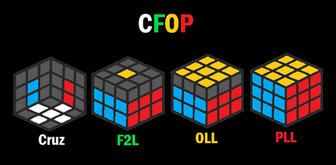

Passo 1: Cruz Branca
Descrição detalhada de como resolver a cruz branca.
Este manual aborda de forma detalhada o método iniciante de resolução do cubo 3x3, utilizando a notação de cubo e os respectivos termos para cada etapa.
O seguinte método é uma adaptação do popular método CFOP:
C – Cross (cruz)
F – First Two Layers (duas primeiras camadas)
O – Orientation of The Last Layer (orientação da última camada)
P – Permutation of The Last Layer (permutação da última camada)
Descrição detalhada de como resolver a cruz branca.
Descrição detalhada de como resolver a camada branca.
Descrição detalhada de como resolver a camada do meio.
Descrição detalhada de como resolver a cruz amarela.
Descrição detalhada de como resolver a camada amarela.
Descrição detalhada de como finalizar a resolução.